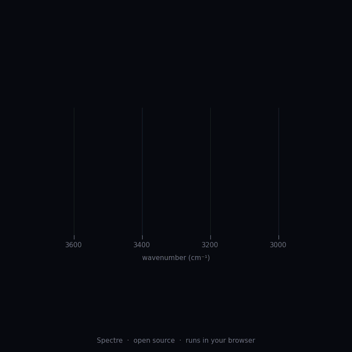
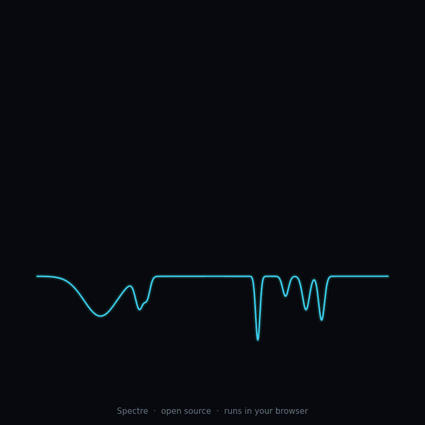
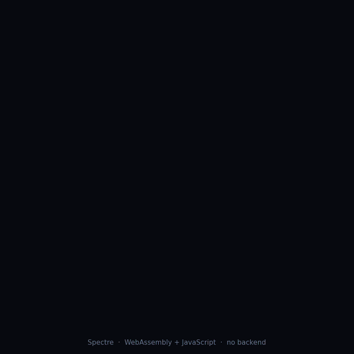
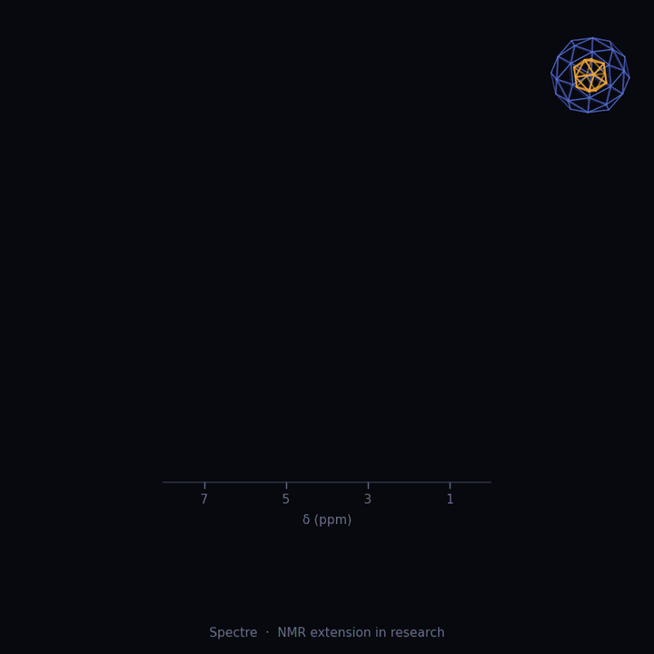

- Length
- 6 weeks, over winter break. Exact dates go to selected applicants.
- Format
- Remote. Work on your own time, one group call a week.
- Time
- About 8 to 10 hours a week
- Cost
- Free. There is no stipend.
- Led by
- Milind Sahu (computational lead) and Paarth Potnis (chemistry lead)
- Code
- Spectre on GitHub, MIT licence
What this is, and is not
This is a structured project programme on an open-source tool. It is not an internship and not a fellowship. Axiom Labs is an independent group of undergraduates with no institutional backing, so we cannot offer a stipend, an institutional certificate or a recommendation letter. At least for now, we will not pretend otherwise.
What you get is real work on a real codebase, direct feedback from the people who wrote it, and a finished project with your name on it.
Spectre today
Spectre is an open-source IR interpretation pipeline: it ingests spectra, preprocesses the signal, extracts peaks, and predicts candidate functional groups using a correlation-table rule engine and a 1D CNN. The browser playground runs client-side. These clips show the current IR work and the planned NMR direction; they are project demonstrations, not accuracy benchmarks. NMR is a research track, not an implemented feature.




All four original GIFs: Axiom Labs Spectre showcase.
Read the docs and code
Start with the project repository, then use the track-specific references below to plan a concrete contribution.
- Spectre source repository — pipeline, tests, scripts, examples and browser demo.
- IR correlation-table guide — current regions, assignments, limitations and how to add rules.
- NMR extension design notes — proposed ¹H/¹³C work; the module is not implemented yet.
- Data sourcing and licensing notes — formats, provenance and dataset considerations.
- Instrument calibration notes — calibration workflow and its assumptions.
- Browser playground guide — how the client-side demo works and its known limitations.
Pick a track
NMR module
Build the planned ¹H NMR foundations: chemical-shift references, parsing, peak and splitting features, then evidence-based rules. This is new work, not an existing Spectre feature. See the NMR design notes.
Spectroscopy, Python
Data and validation
Document data provenance, extend synthetic examples, and evaluate the pipeline on appropriately sourced real spectra. Begin with the data guide and evaluation code.
Data, chemistry or physics background helps
Model and evaluation
Work on the existing 1D CNN, improve tests and evaluation, or investigate additional functional-group classes. See the CNN, training script and tests.
Machine learning, PyTorch or similar
Chemistry rules
Review and extend IR correlation-table entries, improve tests, and compare predictions with documented assignments. Start with the correlation-table guide and rule engine.
Organic chemistry, led with Paarth
Playground and docs
Improve the client-side browser demo, usability and documentation. See the playground guide and web source.
JavaScript, WebAssembly, writing
The six weeks
- Set up and plan. Run Spectre end to end, choose a track, and write a one-page project plan with us.
- First contribution. Get one small change merged through a pull request: a test, a fix or a dataset entry.
- Build. Do the main work of your project. We review progress at the end of week 4 and rescope if needed.
- Evaluate and document. Test it, measure it, and write down what worked and what did not.
- Final project and demo day. Submit the project and present it live to the group.
The final project
Every participant ends with three things: code or data merged into the repository (or a tagged branch, if it is not ready to merge), a short write-up of two to four pages covering the method, the results and the failures, and a ten-minute demo-day presentation.
What you can earn
Certificate of completion
Issued by Axiom Labs, only to participants who meet all three milestones: first pull request merged by the end of week 2, final project submitted, and demo given. It states that Axiom Labs is an independent, student-run group and carries no university logo.
Contribution statement
A one-page letter listing exactly what you built, such as the module, the dataset or the merged pull requests. Available to anyone with merged work, even without the certificate.
Public credit
Your name in the GitHub contributors list and in the release notes.
Authorship or acknowledgement
Only for real contribution. We write the criteria down in week 1 and agree them with you. Nothing is promised in advance.
Demo day
You present your project to the group and to guests we invite.
Who should apply
You should be comfortable writing Python and reading someone else's code. You do not need spectroscopy experience for the data, model or playground tracks. We accept students from any college. We choose based on what you have made and how much time you can commit, not on where you study.
How to apply
- Tell us which track you want and why, in a few lines.
- Link to something you have built: a repository, a notebook, a report.
- Tell us how many hours a week you can give.
We reply with a short call and a small starter task. Selection is based on the task. We take a small cohort so everyone gets feedback.
Questions
Is this an internship?
No. It is a project programme run by Axiom Labs, an independent student group. Please do not describe it as an internship at IISER Tirupati or any other institution.
Can I put it on my CV?
Yes, described accurately: "Spectre Winter Programme, Axiom Labs (independent student research group), 6 weeks", plus what you built.
Is there a stipend or a recommendation letter?
No stipend. We are not offering recommendation letters for now. The contribution statement is the record of what you did.
What if I miss a milestone?
Talk to us early. If you still cannot complete the project, you keep your public GitHub credit and a contribution statement for anything merged, but not the completion certificate.
Who owns the work?
Spectre is MIT licensed. What you contribute is released under the same licence, and your name stays in the history.